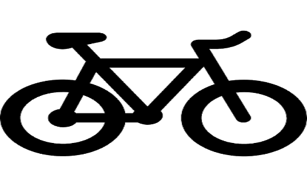
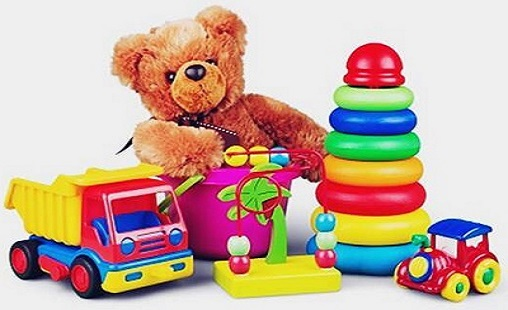

November 25, 2022
This is an October 2022 Twitter perception analysis of Mr. Peter Obi, the Presidential candidate of Labour Party in the 2023 Elections in Nigeria.
I used Python to scrap his twitter activities for the month, did some data preparation in Excel and Power BI to create the visual showing:
1. Number of Tweets, Likes, Retweets and Quotes,
2. Tweet Sentiments,
3. Tweets with the most Likes and Retweets,
4. Tweet count b day and time.
Questions answered include
In this data analysis of a telecom company, 4 critical questions were answered
1. How many customers joined and churned the company,
2. Profile of the customers who Stayed, Joined and Churned the company,
3. Key drivers of customer churn,
4. Is the company losing high value customers?, if so, how can they be retained.
Here I analyzed a Pizza dataset I got from Maven challenge playground
It was indeed a challenge that helped me improve my critical thinking skills, Problem solving skills
and a deeper understanding/use of data analytics skills.
Questions answered include
1. What days and times do we tend to be the busiest,
2. How many pizzas are we making during peak periods,
3. Best and worst selling pizzas and average order value,

This was my #10daysofpowerbi project. Here I analyzed a bike sales dataset. During the preparation and cleaning stage I noticed the calculated fields in the data were wrong and I had to recalculate and do other clean up. It was a good learning experience.
Questions answered include
1. Top 5 countries with highest revenue and profit,
2. Sales trend and revenue generated each month,
3. Top and bottom 5 products and subcategories by profit,
4. Age group distribution

This was the first #10daysofpowerbi mini project. Here I analyzed a Maven Toys Expansion dataset.
This was a class project in my #10daysofpowerbi class where I analyzed a HR dataset of a company with the help of our tutor Nonso_Analytics.